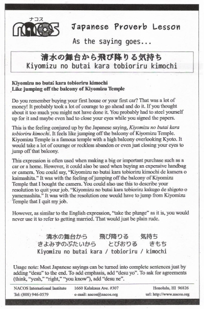

Kiyomizu no butai kara tobioriru kimochi
Like jumping off the balcony of Kiyomizu Temple
Do you remember buying your first house or your first car? That was a lot of money! It probably took a lot of courage to go ahead and do it. If you thought about it too much you might not have done it. You probably had to steel yourself up for it and maybe even had to close your eyes while you signed the papers.
This is the feeling conjured up by the Japanese saying, Kiyomizu no butai kara tobioriru kimochi. It feels like jumping off the balcony of Kiyomizu Temple. Kiyomizu Temple is a famous temple with a high balcony overlooking Kyoto. It would take a lot of courage or reckless abandon or even just closing your eyes to jump off that balcony.
This expression is often used when making a big or important purchase such as a car or a home. However, it could also be used when buying an expensive handbag or camera. You could say, “Kiyomizu no butai kara tobioriru kimochi de kamera o kaimashita.” It was with the feeling of jumping off the balcony of Kiyomizu Temple that I bought the camera. You could also use this to describe your resolution to quit your job. “Kiyomizu no butai kara tobioriru kakugo de shigoto o yamemashita.” It was with the resolution one would have to jump from Kiyomizu Temple that I quit my job.
However, as similar to the English expression, “take the plunge” as it is, you would never use it to refer to getting married. That would just be plain rude.
Usage note: Most Japanese sayings can be turned into complete sentences just by adding “desu” to the end. To add emphasis, add “desu yo”. To ask for agreements (think, “yeah,” “right,” “you know”), add “desu ne”.

| © 1995-2013 NACOS International Institute. All Rights Reserved. |